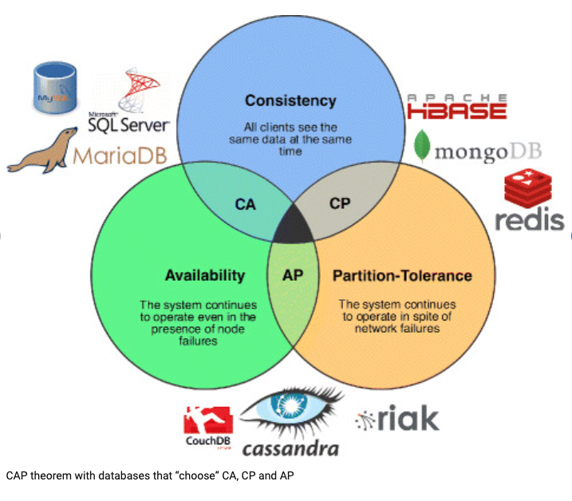

Lakehouse
- Lakehouse: A New Generation of Open Platforms that Unify Data Warehousing and Advanced Analytics
- データレイクとデータウェアハウスとは？それぞれの強み・弱みと次世代のデータ管理システム「データレイクハウス」を解説 - Databricks ブログ
- Data Lakeだと、結局 BIなどの用途で、ETLかましたDWHができる問題あり。
- 分析、ML系のworkloadで、SQL越しではなく、効率的に直接DataFrameアクセスしたくなるというのは納得
- Datawarehouseだときついところ（structured data store)
- Lakehouse
- コンピュート と データの分離
- DWHは一体ですからね。 分析系のworkloadは、コンピュートがバラけているから、扱いづらい
- コンピュート と データの分離
Cloud Spanner と CAP
Cloud Spannerとはなんだろう？
分散データベースだけどACIDが実現できるらしい プロダクト？ RDB?
グローバルに分散したデータベースである
Googleのプロダクト。
- Google Photosとか色々で使われている
- もともと使っていたMySQLを代替。
ConsistencyとScalabilityを両立
- SQLのsyntaxで、トランザクションも提供可能
- globalに、scalableにできるNoSQL的な利点も享受
どういうときに使う？
- 通常のRDBで、スケールの限界にぶつかったとき。
- シャーディングやNoSQLが選択肢となるが、
- SQLを使いたければ、Spannerが選択肢になってくる
- 通常のRDBで、スケールの限界にぶつかったとき。
ref
GCPのデータベースプロダクト
Cloud Spannerに対抗する、AWSやAzureのサービスはある？
- AWSの場合、AuroraとDynamo DBと思われる
- Aurora
- auto scale up and down,
- Spannerの持つ、multi-masterには勝てない？
- これが必要なのは、ごく少数の超巨大グローバル企業のはずで、ほとんどのユースケースでは変わらないかも
- Dynamo DB
- auto scaling
- multi region, multi-master
- NoSQL
- Aurora
Spannerの原理、仕組みは？
Paxos, 原子時計。難しい
- 夢のデータベース？ 「Cloud Spanner」の実力は？：Mostly Harmless（2/2 ページ） - ITmedia エンタープライズ
- Paxosは院生のとき流行って、論文読んだがよくわからなかった記憶がある。。
CAP定理と関連して
- 説明だけ見ると、C,A,P同時に満たしている夢のデータベースに見える
確かに。
1
CAP 定理の意図は本来、設計者にこのトレードオフを真剣に考えてもらうことにありました。ですが、ここでは 2 つの注意すべきことを挙げます。第 1 に、一貫性や可用性を犠牲にしなければならないのは、実際に分断が起こっている間だけで、その間であっても、それを緩和する方法は多くあるということ。第 2 に、定理には 100% の可用性とありますが、そこで議論すべきなのは、現実的な高可用性の実現に伴うトレードオフについてです。
基本、CAで、分断時はCPシステムである
1
2はたして Spanner は CAP で定義されているような CA システムなのだろうかと。端的に答えると、技術的には違いますが、実際のところ CA システムだと考えて構いません。
分断が起きると Spanner は C を選択し、A を犠牲にします。つまり技術的に見ると、Spanner は CP システムなのです。Availabilityを犠牲にしているとはいえ、現実的には無視できるレベル だからOKである。
結局仕組みはよくわからない。
- Googleの管理するインフラ、NWの中でのみ使えるということ がポイントなのだろう。
- グローバルに一貫したタイムスタンプを付与する仕組みは？
- 原子時計？
CAP
ACID, BASE, CAP
一貫性対可用性の議論の最初のバージョンはACID対BASEというかたちで現れましたCAP定理の目的はより広く設計について探索する必要があることを示すことでした
そもそも、CPってどういうシステム？
- Pがわからない。
- P: the system continues to work in spite of
Networkfailure - データベースに対する、cache (e.g. Redis)が該当するっぽい
- P: the system continues to work in spite of
- Network failureを許容して、Consistensy を維持ってどういうこと？
- Network分断の時点で、Consistency保てないのでは？
- PでRedisがいて、すべてのクライアントが同じデータを見れるから、CPなのかな。

- Pがわからない。
APは
- 他ノードへのConsistencyはおいておいて、アクセスできるノードにアクセスしてしまう。（それが、consistentかはおいておいて）→
Aの選択 Pは？
- 他ノードへのConsistencyはおいておいて、アクセスできるノードにアクセスしてしまう。（それが、consistentかはおいておいて）→
やっぱり、この2つ選ぶというのはミスリーディングである。
[Please stop calling databases CP or AP — Martin Kleppmann’s blog](https://martin.kleppmann.com/2015/05/11/please-stop-calling-databases-cp-or-ap.
html)Pは、犠牲にする・しない という問題じゃない。インターネットは常にこの問題をはらむ
Partition Tolerance (terribly misnamed) basically means that you’re communicating over an asynchronous network that may delay or drop messages. The internet and all our data centres have this property, so you don’t really have any choice in this matter.